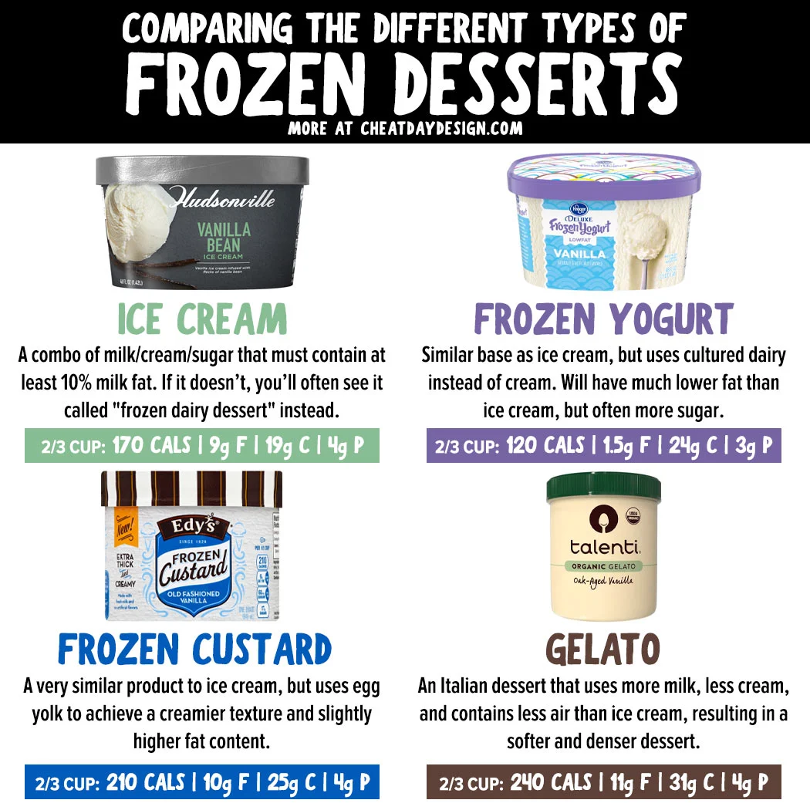

Frozen desserts offer a delightful array of options that cater to a wide range of tastes and preferences. From the rich, creamy texture of traditional ice cream and the dense,
flavor-packed experience of gelato, to the refreshing, fruit-forward sorbets and the tangy sweetness of frozen yogurt, there is something to satisfy every craving.
For those who enjoy a bit of nostalgia, classic ice pops and innovative frozen custards provide both comfort and excitement.
Meanwhile, sophisticated treats like baked Alaska and exotic varieties such as kulfi showcase the endless possibilities within the frozen dessert category.
Whether you’re seeking a simple pleasure or an elaborate indulgence, the world of frozen desserts promises a delicious adventure with each bite.
Types of Frozen Desserts
- Gelato
- Frozen Custard
- Frozen Yogurt
- Sorbet
- Ice Cream
- Ice Pop